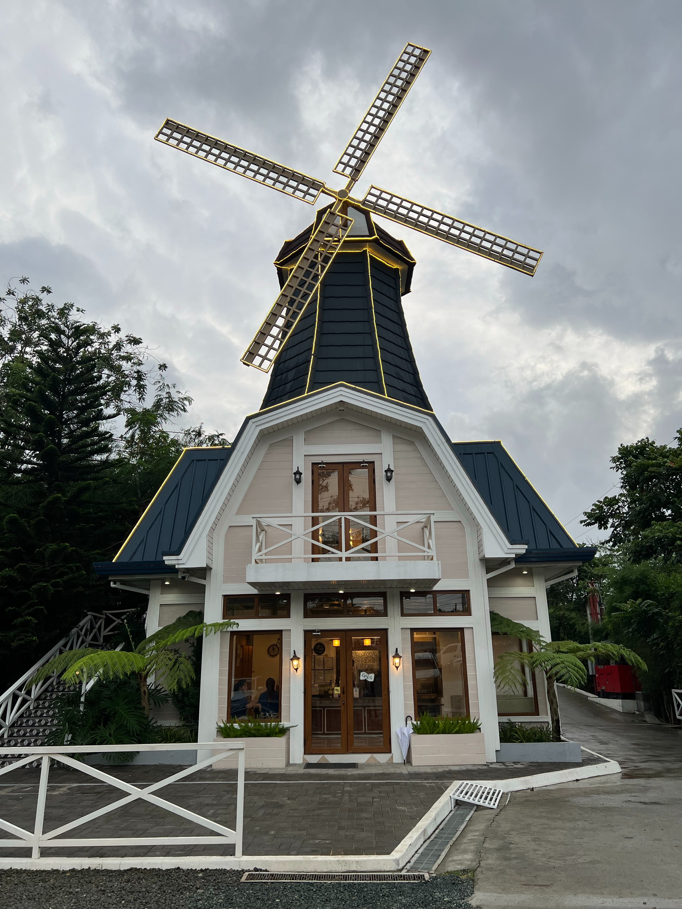

About

Introducing Nel, a nature enthusiast with an unyielding passion for hiking and a soul that finds solace amidst the beauty of the great outdoors. Born to wander, Nel is more than a hiker; they are a seeker of trails, a conqueror of peaks, and a storyteller of the wilderness.
With a backpack slung over one shoulder and a pair of well-worn hiking boots, Nel embarks on journeys that transcend the physical realm. Each step on the trail is a deliberate stride toward self-discovery, a communion with nature's wonders, and a celebration of the profound simplicity found in the rhythm of footsteps on the earth.
Nel doesn't just hike; they dance with the mountains, converse with the forests, and find serenity in the melody of rustling leaves and babbling streams. A firm believer that the journey is the destination, Nel revels in the challenges presented by steep ascents and rugged terrains, understanding that every uphill battle is a metaphor for life's hurdles, and every summit reached is a triumph of resilience.
Off the trails, Nel is a beacon of inspiration, encouraging others to embrace the transformative power of nature. Whether it's through sharing captivating trail stories, recommending hidden gems, or organizing group hikes, Nel's enthusiasm for the outdoors is infectious.
In the world of Nel, hiking is not just a hobby; it's a way of life. It's about finding beauty in simplicity, strength in challenges, and a profound connection to the Earth. So, lace up your boots, join Nel on the trail, and let the journey unfold—one step at a time.
Place
.jpg)
Mt. Daraitan
Mount Daraitan, a natural masterpiece nestled in the heart of the Philippines,
beckons with its enchanting beauty and rugged charm. Standing tall in the Sierra Madre
mountain range, this majestic peak offers a playground for both seasoned adventurers and nature enthusiasts alike.
Cloaked in a lush tapestry of emerald green.
.jpg)
Mt. Maynuba
Mount Maynuba, a hidden gem in the heart of the Philippines, offers a captivating escape into nature's embrace.
As part of the Sierra Madre mountain range,
Mount Maynuba stands as a testament to the raw beauty of untouched landscapes.
.jpg)
Mt. Banahaw
Mount Banahaw, a sacred and mystical peak in the Philippines, stands as a revered testament to the
intertwining of nature and spirituality. Nestled in the Southern Tagalog region,
this majestic mountain is not just a physical elevation but a cultural and historical landmark.

Batangas
Batangas, a province in the Philippines, is home to some of the country's most pristine and captivating beaches.
One such coastal gem awaits along its shores,
offering a blend of sun-kissed tranquility and vibrant marine life.

Olongapo
Olongapo, a coastal city in the Philippines, is blessed with pristine beaches that invite visitors to
unwind in the embrace of sun, sand, and sea. One notable coastal destination is the beach in Olongapo,
a haven of natural beauty and recreational opportunities.
Bataan
Bataan, a province in the Philippines known for its rich history, also boasts beautiful beaches along its coastline.
One such coastal retreat is the beach in Bataan,
a serene haven that blends natural beauty with a touch of historical charm.
Ilocos sur
Ilocos Sur, a province in the northern Philippines, is a captivating tapestry of history, culture, and
natural beauty. Nestled along the western coast of Luzon, this province is known for its charming heritage towns, cobblestone streets,
and well-preserved Spanish colonial architecture.
Baguio
Baguio, often referred to as the "Summer Capital of the Philippines," is a city nestled in the scenic
mountains of northern Luzon. Famous for its cool climate, breathtaking landscapes, and vibrant cultural scene,
Baguio is a popular destination for both locals and tourists.

Tagaytay
Tagaytay, a city perched on the highlands of Cavite in the Philippines, is a picturesque destination
known for its cool climate, stunning views, and recreational offerings. Nestled on the rim of the Taal Volcano,
Tagaytay provides a
unique perspective on nature's wonders.